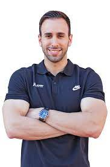

BIENVENIDOS A NUESTRA PAGINA
No importa tu nivel o experiencia, siempre es bueno tener la opción de pedir ayuda. Sobre todo si eres principiante y no sabes cómo o por dónde empezar, o si eres un deportista que retoma el entrenamiento tras una lesión. Incluso si eres un atleta que busca nuevos retos
Lo ultimo de nuestro blog
¿Como empezar a tomar suplementos deportivos?
Guia para ganar masa muscular
Contacta tu entrenador personal
